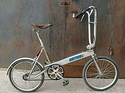
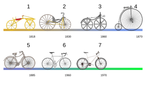

ველოსიპედი (ფრანგ. vélocipède — „ჩქარი ფეხი“) — ორბორბლიანი (არის ერთ, სამ და ოთხბორბლიანი მოდიფიკაციებიც) მექანიკური სატრანსპორტო საშუალება. მისი ტარება შეიძლება „პედლების“ ფეხით დატრიალებით, პედლების საშუალებით ხდება ასევე სიჩქარის რეგულირება.
1790 წელში პირველი ველოსიპედი რომელიც გამოიგონეს საფრანგეთში ჰგავდა ორბორბლიან ხის ცხენს, პედლებისა და საჭის გარეშე. 1817 წელს გერმანიაში მას დაამატეს მოძრაობის მიმმართველი მექანიზმი. 1861 წელს საფრანგეთში ველოსიპედზე გამოჩნდა პედლები. 1870 წელს პირველად წინა დიდი ბორბლიანი ველოსიპედი გამოჩნდა ბრიტანეთში. და საბოლოოდ 1903 წელს პირველად გაიმართა შეჯიბრება - ტურ დე ფრანსი. მრავალ ქალაქში, მათ შორის ლონდონსა და ტალინში, „სასწრაფო დახმარების“ ექიმები გადაადგილებას ხშირად ველოსიპედით ამჯობინებენ. ველოსიპედს ბედმა მხოლოდ „მშვიდობისმყოფელობითი“ ფუნქცია არ შესძინა. მან დიდი გამოყენება პოვა სამხედრო საქმეშიც. ველოსიპედს დაზვერვისა და შეტყობინების გადასაცემად ჯერ კიდევ ინგლის-ბურების ომის დროს (1899-1902) ორივე მხარე (დიდი ბრიტანეთი და სამხრეთ აფრიკის რესპუბლიკები) წარმატებით იყენებდა. ველოსიპედს განსაკუთრებული როლი ჰქონდა პირველი მსოფლიო ომის დროსაც, როგორც დაზვერვისა და შეტყობინების გადაცემის, ისე დაჭრილთა ტრანსპორტირების მისიებში. ველოსიპედი წარმატებით გამოიყენა იაპონიამ 1937 წელს ჩინეთში, 1941 წელს კი სინგაპურში შეჭრის დროს. ვერმახტში ყველა ქვეითი დივიზიის დაზვერვის ბატალიონებში შედიოდა ველოსიპედისტთა დანაყოფები. ეს სატრანსპორტო საშუალება შეუდარებელი იყო ათასობით ჯარისკაცის ერთი ადგილიდან მეორემდე, მოწინააღმდეგისთვის შეუმჩნევლად გადასროლისთვის. თანაც ველოსიპედს არ სჭირდებოდა საწვავი. მეორე მსოფლიო ომის დროს მოკავშირეთა ოპერაციებში მონაწილეობდნენ პარაშუტისტები, რომელთა ეკიპირებაში დასაკეცი ველოსიპედები შედიოდა. ველოსიპედს ტვირთების გადასატანად იყენებდნენ პარტიზანები ვიეტნამის ომის დროს. შვედეთის შეიარაღებულ ძალებში ველოსიპედისტთა დანაყოფებმა 2001 წლამდე, შვეიცარიაში კი 2003 წლამდე იარსება. არსებობს ცნობები, რომ ამერიკული სპეცრაზმი ავღანურ კამპანიაში ველოსიპედსაც იყენებს. რაც ყველაზე საინტერესოა, ფონ დრეიზის გენიალური ქმნილების პოპულარობას ვერაფერი დააკლო უფრო გვიანდელმა გადაადგილების საშუალებებმა — მოტოციკლმა და ავტომობილმა. სხვათა შორის, ზინდელფინგენში, „მერსედეს-ბენცის“ ქარხანაში, მუშა-მოსამსახურეები საწარმოს ტერიტორიაზე დღემდე ველოსიპედებით გადაადგილდებიან. ყოველ განყოფილებას განსხვავებული ფერის ორთვალები ჰყავს.
დღეისთვის შექმნილია ველოსიპედის სხვადასხვა ტიპები. გამოყენების მიხედვით ველოსიპედები არსებობს: ქალის, BMX, მთის, ტრასის, გრაველის, კრუიზერი, სითიბაიკი, შოსეინი, ჰიბრიდი, ტურინგის, ელექტრო და სხვა. თვლების რაოდენობისა და მდებარეობის მიხედვით ასევე არსებობს ველოსიპედების მრავალფეროვნება. უნიციკლს აქვს ერთი ბორბალი და ყველა დანარჩენი ნაწილი, რომლებიც ჩვეულებრივ ორბორბლიან ველოსიპედებს აქვთ. მის სამართავად ოთხმხრივი ბალანსირებაა საჭირო და მიჩნეულია, რომ უნიციკლის მართვის სწავლა ადამიანს 10-15 საათში შეუძლია. მონოციკლსაც ერთი ბორბალი აქვს, ოღონდ ის დიდია და მძღოლი ბორბლის შუაში ზის. მონოციკლი ზოგჯერ მოტორიზებულია. ორ- ან სამბორბლიანი ველოსიპედია ლიგერადი, რომელსაც ნახევრად მწოლარე მართავენ. ლიგერადი აეროდინამიკურია და მაღალ სიჩქარეს ავითარებს, ამიტომ მათთვის ცალკე შეჯიბრებები ეწყობა. ტანდემი არის ველოსიპედი ორი ადამიანისთვის, თავთავიანთი პედლებით. ამზადებენ ველოსიპედებს სამი და მეტი ადამიანისათვისაც. ხოლო ტრიციკლით, სამბორბლიანი ველოსიპედით, ბავშვები ერთობიან.